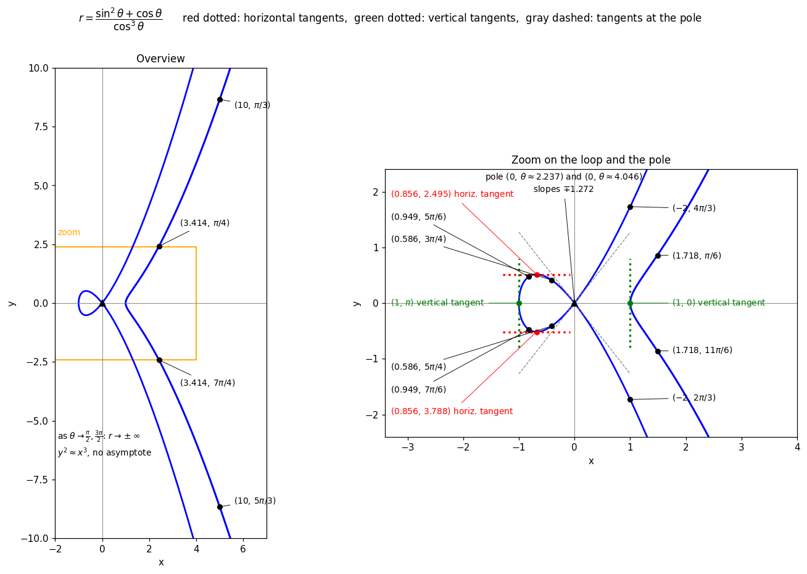

Polar Example
Michael Sun · 13 October 2026
Polar Curve
\[r=\frac{\sin^2\theta+\cos\theta}{\cos^3\theta}\]
Finding \(x\) and \(y\)
Since \(r\) is undefined when \(\cos\theta=0\), we require \(\theta\neq\frac{\pi}{2},\frac{3\pi}{2}\).
Using \(x=r\cos\theta\) and \(y=r\sin\theta\):
\(x=r\cos\theta=\frac{\sin^2\theta+\cos\theta}{\cos^2\theta}=\sec^2\theta+\sec\theta-1\)
\(y=r\sin\theta=x\tan\theta=\frac{\sin\theta(\sin^2\theta+\cos\theta)}{\cos^3\theta}\)
Also, \(r(-\theta)=r(\theta)\), so the curve is symmetric about the \(x\)-axis.
\(\frac{dx}{d\theta}\)
Firstly, \(r=\sec^3\theta+\sec^2\theta-\sec\theta\), so \(\frac{dr}{d\theta}=(3\sec^2\theta+2\sec\theta-1)\sec\theta\tan\theta=\frac{\sin\theta(3-\cos\theta)(1+\cos\theta)}{\cos^4\theta}\).
Then, \(\frac{dx}{d\theta}=\frac{dr}{d\theta}\cos\theta-r\sin\theta=\frac{\sin\theta(2+\cos\theta)}{\cos^3\theta}\).
(This agrees with differentiating \(x=\sec^2\theta+\sec\theta-1\) directly, which gives \((2\sec\theta+1)\sec\theta\tan\theta\).)
\(\frac{dy}{d\theta}\)
\(\frac{dy}{d\theta}=\frac{dr}{d\theta}\sin\theta+r\cos\theta=\frac{3+2\cos\theta-3\cos^2\theta-\cos^3\theta}{\cos^4\theta}\).
\(\frac{dy}{dx}\)
\(\frac{dy}{dx}=\frac{dy/d\theta}{dx/d\theta}=\frac{3+2\cos\theta-3\cos^2\theta-\cos^3\theta}{\cos\theta\sin\theta(2+\cos\theta)}\).
Horizontal Tangents
Horizontal tangents occur when \(\frac{dy}{d\theta}=0\) and \(\frac{dx}{d\theta}\neq0\).
\(\frac{dy}{d\theta}=0\Rightarrow 3+2\cos\theta-3\cos^2\theta-\cos^3\theta=0\Rightarrow\cos^3\theta+3\cos^2\theta-2\cos\theta-3=0\).
The only root with \(-1\leq\cos\theta\leq1\) is \(\cos\theta\approx-0.7984\), so \(\theta\approx2.495\) or \(\theta\approx3.788\). (There is no nice exact form for this, as this is the solution of a cubic)
At these angles, \(\sin\theta\neq0\) and \(2+\cos\theta\neq0\), so \(\frac{dx}{d\theta}\neq0\), and the tangents are indeed horizontal.
Here \(r\approx0.856\), so the points are \((x,y)\approx(-0.684,0.516)\) and \((x,y)\approx(-0.684,-0.516)\).
Vertical Tangents
Vertical tangents occur when \(\frac{dx}{d\theta}=0\) and \(\frac{dy}{d\theta}\neq0\).
Since \(2+\cos\theta>0\) and \(\cos\theta\neq0\), \(\frac{dx}{d\theta}=0\Rightarrow\sin\theta=0\Rightarrow\theta=0\) or \(\theta=\pi\).
At \(\theta=0\): \(\frac{dy}{d\theta}=\frac{3+2-3-1}{1}=1\neq0\) and \(r=1\), so there is a vertical tangent at \((1,0)\).
At \(\theta=\pi\): \(\frac{dy}{d\theta}=\frac{3-2-3+1}{1}=-1\neq0\) and \(r=1\), so there is a vertical tangent at \((-1,0)\).
Additional Points for the Sketch
The pole. \(r=0\Rightarrow\sin^2\theta+\cos\theta=0\Rightarrow\cos^2\theta-\cos\theta-1=0\Rightarrow\cos\theta=\frac{1-\sqrt5}{2}\approx-0.618\), so \(\theta\approx2.237\) or \(\theta\approx4.046\).
Since \(\frac{dr}{d\theta}\neq0\) at these angles, the tangent lines at the pole have slopes \(\tan\theta=\mp\sqrt{\frac{1+\sqrt5}{2}}\approx\mp1.272\).
The curve passes through the origin twice with different tangents, so the origin is a node. For \(2.237<\theta<4.046\) we have \(r>0\), which forms a loop through \((-1,0)\).
Behaviour near \(\cos\theta=0\). As \(\theta\to\frac{\pi}{2}^-\), \(\frac{dy}{dx}\to+\infty\), and as \(\theta\to\frac{\pi}{2}^+\), \(\frac{dy}{dx}\to-\infty\). Also \(r\to\pm\infty\).
Since \(\frac{y}{x}=\tan\theta\to\infty\) while \(x\to\infty\), there is no slant asymptote. The branches behave like \(y^2\approx x^3\).
Table of points. Using \(x=\frac{\sin^2\theta+\cos\theta}{\cos^2\theta}\) and \(y=x\tan\theta\):
| \(\theta\) | \(r\) | \((x,y)\) exact | \((x,y)\) approx. |
|---|---|---|---|
| \(0\) | \(1\) | \((1,0)\) | \((1,0)\) |
| \(\frac{\pi}{6}\) | \(\frac{12+2\sqrt3}{9}\approx1.718\) | \(\left(\frac{1+2\sqrt3}{3},\frac{6+\sqrt3}{9}\right)\) | \((1.488,0.859)\) |
| \(\frac{\pi}{4}\) | \(2+\sqrt2\approx3.414\) | \((1+\sqrt2,1+\sqrt2)\) | \((2.414,2.414)\) |
| \(\frac{\pi}{3}\) | \(10\) | \((5,5\sqrt3)\) | \((5,8.660)\) |
| \(\frac{2\pi}{3}\) | \(-2\) | \((1,-\sqrt3)\) | \((1,-1.732)\) |
| \(\approx2.237\) | \(0\) | \((0,0)\) | pole |
| \(\frac{3\pi}{4}\) | \(2-\sqrt2\approx0.586\) | \((1-\sqrt2,\sqrt2-1)\) | \((-0.414,0.414)\) |
| \(\approx2.495\) | \(\approx0.856\) | \((-0.684,0.516)\) | |
| \(\frac{5\pi}{6}\) | \(\frac{12-2\sqrt3}{9}\approx0.949\) | \(\left(\frac{1-2\sqrt3}{3},\frac{6-\sqrt3}{9}\right)\) | \((-0.821,0.474)\) |
| \(\pi\) | \(1\) | \((-1,0)\) | \((-1,0)\) |
By symmetry about the \(x\)-axis, each point with \(y\neq0\) has a mirror image \((x,-y)\) at angle \(2\pi-\theta\). For example, \(\theta=\frac{4\pi}{3}\) gives \((1,\sqrt3)\).
